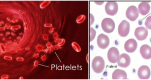

What Are The Application Of Cinnamaldehyde?
As in the field of health, cinnamaldehyde helps to fight tooth decay and bad breath so that the potion is usually used to improve oral health. The antifungal and antibacterial properties of cinnamaldehyde can also help reduce infection.

In addition, Cinnamaldehyde can also limit the freezing of dangerous platelets of blood, which in turn will cause insufficient blood flow. This is done by preventing the production of arachidonic acid responsible for the antiinflammatory response of the cell membrane.
Cinnamaldehyde is also added to foods and medicines to improve its quality in terms of flavor and taste. Cinnamaldehyde is used as a flavoring agent in liquids, ice cream, chewing gum and candy. Cinnamaldehyde is also used in perfumes to create a fruity and attractive aroma.
>
Cinnamaldehyde is also an effective mosquito repellent, used to expel animals such as cats and dogs. Cinnamaldehyde is also used as an efficient insecticide for mosquitoes. It has been found that about half of Aedes aegypti mosquito larvae are killed by 29 ppm cinnamaldehyde in 24 hours.
Cinnamaldehyde is also used as a fungicide. Cinnamaldehyde is also used to prevent corrosion in steel and other ferrous alloys in corrosive liquids such as chlorid acid.